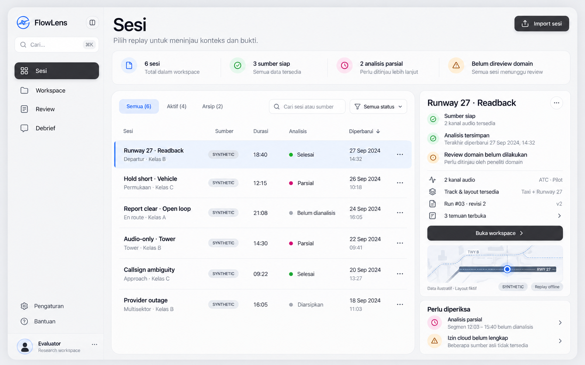
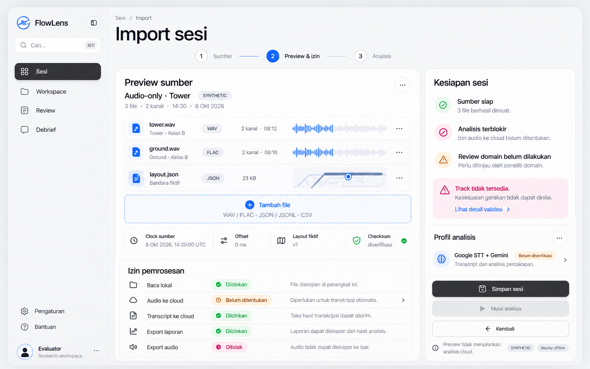
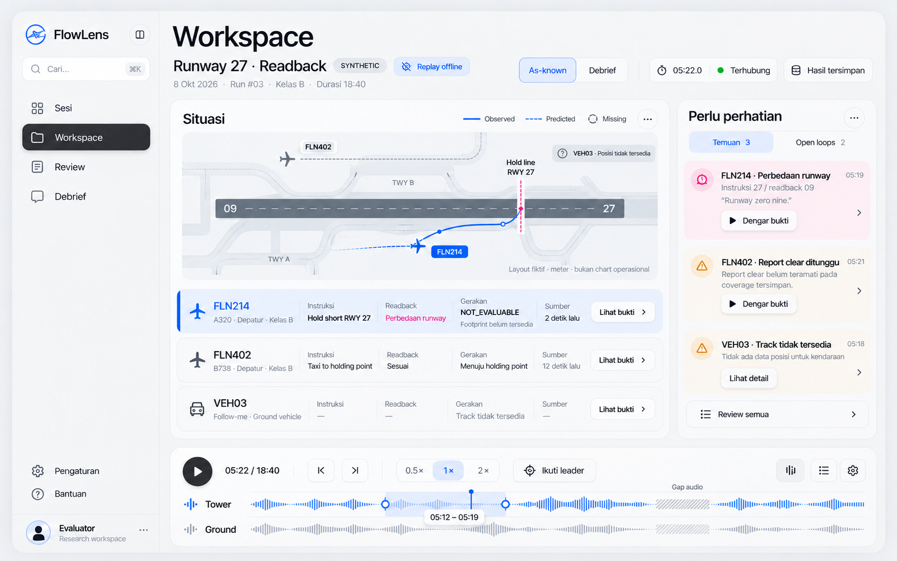
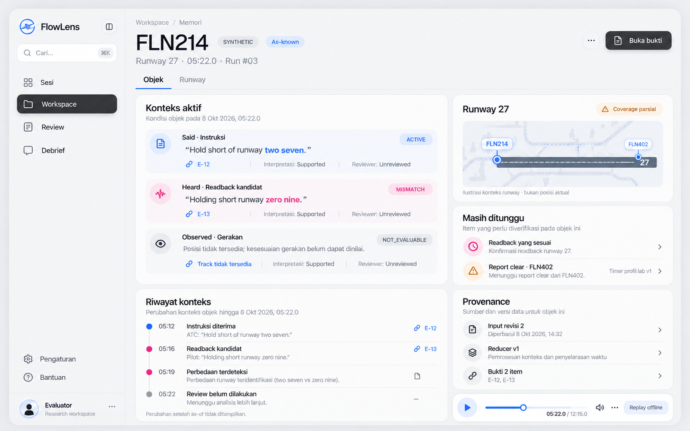
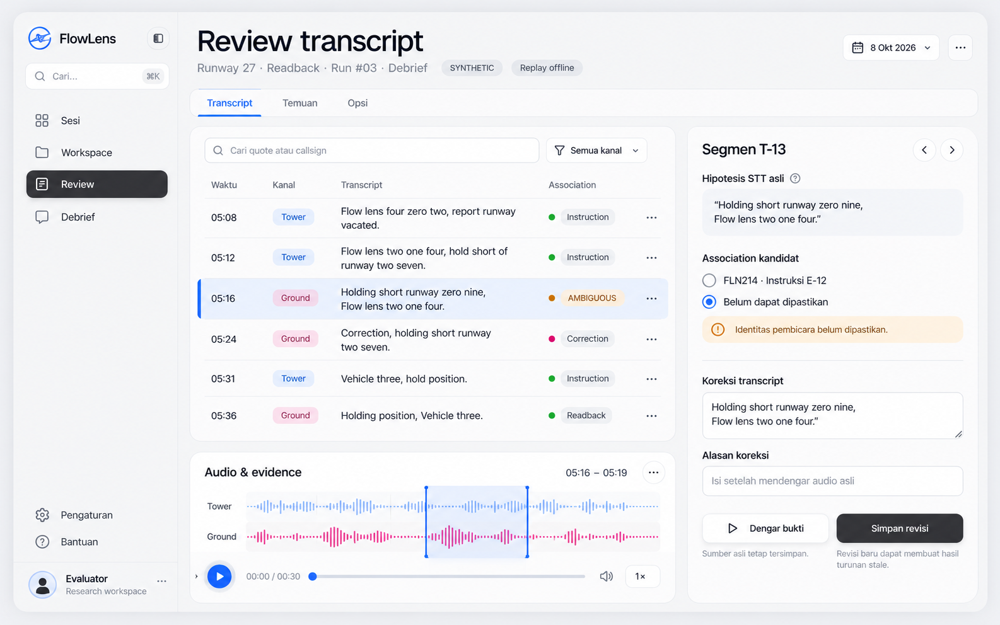
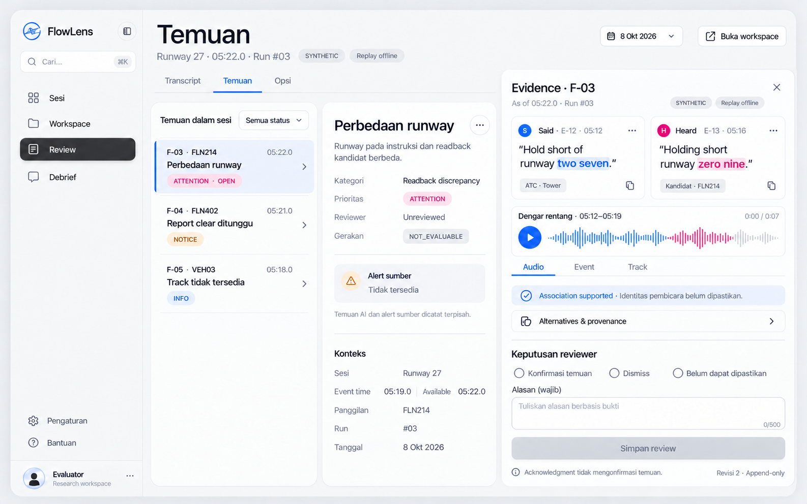
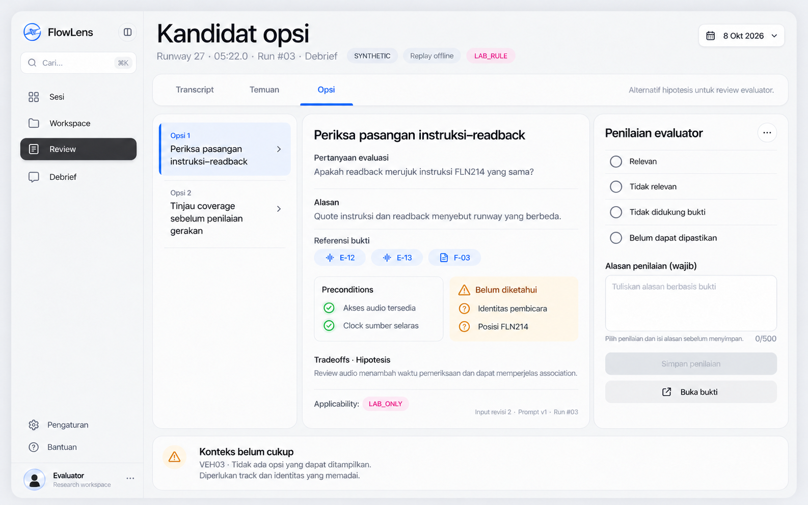
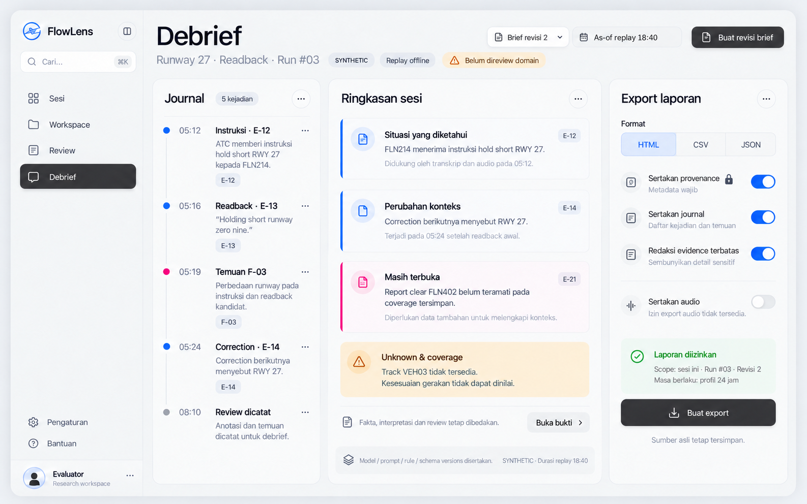

ATC FlowLens · Design direction
Konteks yang jelas.
Bukti yang dekat.
Delapan gambar terpisah, satu untuk setiap halaman. Gunakan visual untuk hierarchy, layout dan style; gunakan spesifikasi untuk semantics, copy dan state. Klik gambar untuk ukuran asli.
01 / 08 · Catalogue + readiness rail
Katalog Sesi

02 / 08 · Structured preview + permissions
Import & Readiness

03 / 08 · Situation + memory + attention + replay
Replay Workspace

04 / 08 · Independent evidence dimensions + history
Memori Objek & Runway

05 / 08 · Transcript + association inspector + audio
Review Transcript & Association

06 / 08 · Finding queue + docked evidence drawer
Temuan & Evidence

07 / 08 · Option dossier + evaluator ratings
Review Kandidat Opsi

08 / 08 · Journal + versioned brief + scoped export
Debrief & Export
